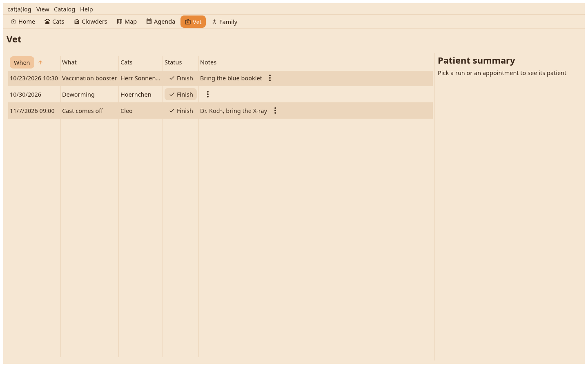

The runs and appointments across all cats, open first, with the patient sheet of the one you pick and the report one click away.

One row per appointment or vet run with date, what and whom, sorted open first. A click shows the patient sheet beside it: the cat's data, the fields a vet asks for, the recent values.
Finish closes the appointment and can write a value into a field, the vaccination date for one; a run asks which cats were treated. The report button builds the vet report for the patient.